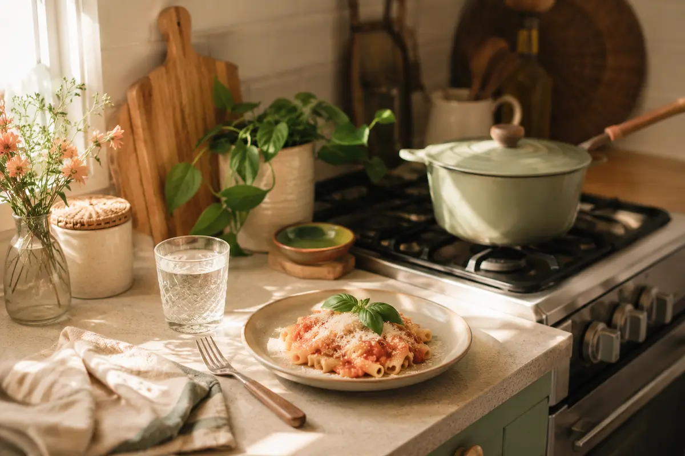

Cozinhando para Uma ou Duas Pessoas
Cozinhar pra poucas pessoas tem lá seus desafios — receita que rende demais, ingrediente que estraga antes de acabar. Mas com alguns ajustes simples, dá pra comer bem sem desperdiçar nada.
Ajustando Porções
- Use a calculadora de porções das nossas receitas pra recalcular as quantidades automaticamente, sem precisar fazer conta de cabeça.
- Prefira comprar a granel quando possível — assim você leva só a quantidade que realmente vai usar.
- Opte por embalagens menores de itens perecíveis, como leite, iogurte e queijo.
Aproveitando Sobras
- Congele porções individuais em potes ou sacos próprios pra freezer, já etiquetados com a data.
- Use sobras de arroz, legumes e carnes pra criar novos pratos — como um risoto ou uma sopa.
- Molhos e caldos também podem ser congelados em forminhas de gelo, pra usar só a quantidade necessária depois.
Compras Inteligentes
- Planeje o cardápio da semana antes de ir ao mercado — isso evita compra por impulso.
- Dê preferência a ingredientes versáteis, que rendem mais de uma receita (um pacote de espinafre pode virar salada, omelete e sopa).
- Leve uma listinha e resista à tentação das embalagens "família".
Cozinhar pra poucas pessoas não precisa significar comer sempre a mesma coisa (ou desperdiçar comida) — com um pouco de planejamento, dá pra aproveitar cada ingrediente até o fim!
Veja também: Ver todas as Receitas